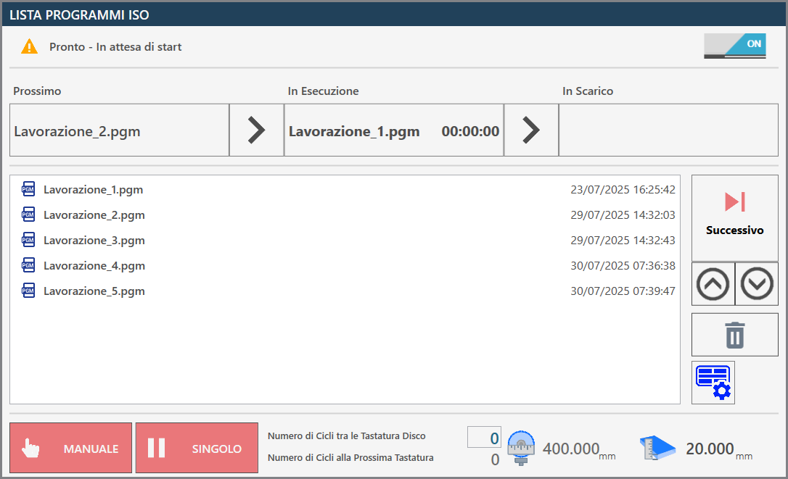
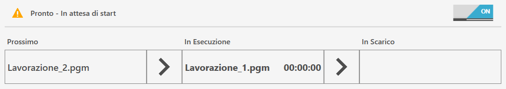
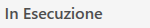
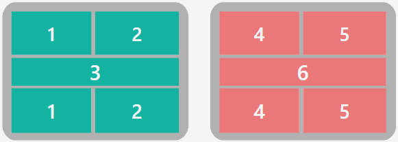
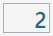
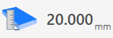

La pagina Lista programmazione file ISO permette di eseguire più programmi consecutivamente, creati precedentemente attraverso programmi CAD-CAM, per macchine con due aree di lavoro, macchine Twin o programmi con più lavorazioni create quando già la macchina è in funzione.

Barra superiore
Nella barra superiore sono riportate informazioni di monitoraggio dello stato di avanzamento della lista

 | Attivazione/Disattivazione Lista Programmi ISO |
  | Stato di esecuzione della lista |
   | Barra di avanzamento della lista |
Barra di avanzamento della lista
Questa barra di avanzamento fornisce informazioni sullo stato di esecuzione del programma ISO in corso, offrendo al contempo una panoramica generale sul programma successivo in lista e su quello che ha già completato la fase di lavorazione ed è passato allo scarico.

Nell'immagine precedente non è ancora visibile alcun programma in fase di scarico, poiché l'esecuzione della lista non è stata avviata e nessun pezzo è stato ancora processato. Viceversa, nel caso in cui sia presente un solo file ISO nella lista oppure la lavorazione sia stata avviata e tutti gli altri file siano già stati eseguiti, la sezione Prossimo risulterà vuota.
Durante l'esecuzione, verrà visualizzato in tempo reale lo stato di avanzamento del programma, come illustrato di seguito.

Menù laterale
Sul lato destro del pannello ventose sono presenti alcuni pulsanti relativi alla gestione dei singoli file nella lista programmi.
Esegui programma successivo | |
 | Sposta elemento selezionato più in alto |
Sposta elemento selezionato più in basso | |
 | Cancella elemento selezionato |
 | Pannello ventose |
Pannello Ventose
E’ possibile utilizzare le ventose in manuale per spostare dei pezzi da una zona di lavoro all’altra.

Pulsanti ventose
 | Abilitazione / disabilitazione ventose |
 | VENTOSE: ALZA - Parcheggio ventose |
 | VENTOSE: ABBASSA - Predisponi ventose |
 | SOLLEVA PEZZO: RILASCIA - Scaricamento pezzo |
 | SOLLEVA PEZZO: AVVIA - Sollevamento pezzo |
  | SOFFIO - Comando soffio |
  | VUOTO - Comando pompa del vuoto |
Condizioni di sicurezza
Prestare particolare attenzione alle ventose attive durante il sollevamento, assicurandosi che le aree utilizzate siano sufficienti a sollevare il pezzo oggetto della movimentazione. Cercare di utilizzare sempre la maggior area di vuoto disponibile per effettuare la presa del pezzo e controllare che non ci siano difetti e rotture sul materiale che possano creare pericoli o problemi al funzionamento della macchina.
Una volta accesa la pompa del vuoto, il suo spegnimento è consentito solo attraverso le funzioni automatiche predisposte allo scopo. La pressione del pulsante di reset o del fungo di emergenza non ha alcun effetto sulla pompa del vuoto che continuerà a funzionare. Lo spegnimento della pompa può essere forzato mediante l’apposito pulsante dentro la pagina “Comandi Aggiuntivi”.
Nelle procedure automatiche, prima di effettuare il sollevamento del pezzo, viene controllato lo stato del vuoto attraverso un apposito sensore: se non viene rilevato un valore di vuoto sufficiente appare l’allarme “mancanza vuoto”. La pompa continuerà a rimanere attiva fino a quando il vacuostato non rileva un valore corretto, oppure se verrà disabilitata dalla pagina “Comandi Aggiuntivi”.
La mancanza di alimentazione alla pompa del vuoto comporta una veloce perdita dello stesso e la conseguente caduta del materiale sollevato con le ventose.
Barra inferiore
Nella parte inferiore della barra vengono visualizzate alcune funzionalità relative all’esecuzione della lista dei programmi ISO, oltre al monitoraggio sia dell’utensile sia della lastra.

Gestione esecuzione lista
Nella parte inferiore troviamo inoltre i due pulsanti relativi alle modalità di esecuzione dei programmi:
 | Manuale / automatico |
  | Singolo / prossimo automatico |
Monitoraggio lastra e utensile
Al centro e sulla destra della barra inferiore, l’operatore può configurare monitoraggi periodici del diametro dell’utensile, impostando controlli a intervalli definiti in base al numero di cicli effettuati.

 | Numero di Cicli tra le Tastatura Disco |
|---|---|
 | Numero di Cicli alla Prossima Tastatura |
 | Diametro utensile |
 | Spessore lastra |
Esecuzione della Lista Programmi ISO
Se la Lista Programmi Iso è disattivata, l’interruttore in alto a destra del pannello comparirà spento; sarà quindi possibile abilitare la funzionalità semplicemente cliccando questo pulsante.
La lista di programmi ISO viene automaticamente ampliata man mano che vengono generati ISO in Parametrix, ad ogni modo l’operatore può ricollocare elementi all’interno della lista oppure rimuoverli da essa in base alle proprie esigenze.
Prima di procedere con l’esecuzione della lista, l’operatore ha la possibilità di impostare il numero di cicli che verranno eseguiti tra le operazioni di tastatura dell’utensile.
Verrà quindi aggiornato e visualizzato il numero di cicli rimanenti alla tastatura successiva.
L’operatore avvia l’esecuzione della lista di programmi premendo il pulsante “Avvia ciclo“. In tal modo, i programmi vengono eseguiti in sequenza, con la visualizzazione simultanea del programma in corso, di quello che sarà eseguito successivamente e di quello già completato.
Se la modalità di esecuzione dei programmi è impostata su Manuale e Singolo, l’esecuzione della lista verrà interrotta al termine del programma in esecuzione, appena dopo aver preparato il successivo programma da eseguire.
In tale evenienza l’operatore ha la possibilità di premere il pulsante Successivo quando ritiene più opportuno e procedere con l’esecuzione pigiando nuovamente il pulsante “Avvia Ciclo“